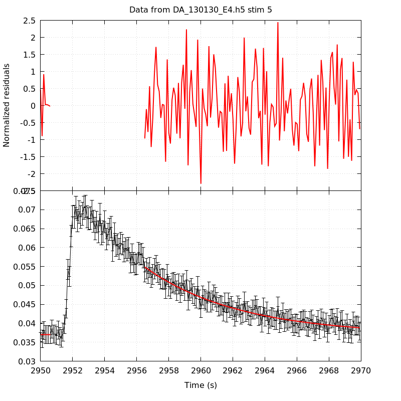
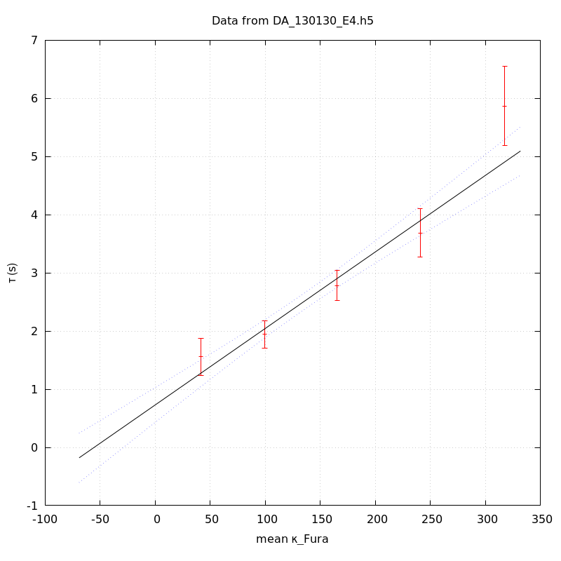

The baseline length is: 7.
When fitting tau against kappa_Fura only the transients for which the fit RSS and the lag 1 auto-correlation of the residuals were small enough, giving an overall probability of false negative of 0.02, were kept (see the numerical summary associated with each transient).
The good transients are: 1, 2, 3, 4, 5.
The time at which the 'good' transients were recorded appear in red.
On each graph, the residuals appear on top. Under the null hypothesis, if the monoexponential fit is correct they should be centered on 0 and have a SD close to 1 (not exactly 1 since parameters were obtained through the fitting procedure form the data.
The estimated [Ca2+] appears on the second row. The estimate is show in black together with pointwise 95% confidence intervals. The fitted curve appears in red. The whole transient is not fitted, only a portion of it is: a portion of the baseline made of 7 points and the decay phase starting at the time where the Delta[Ca2+] has reached 50% of its peak value.
The time appearing on the abscissa is the time from the beginning of the experiment.
Transient 1 is 'good'.

nobs = 182
number of degrees of freedom = 179
baseline length = 7
fit started from point 25
estimated baseline 0.0430217 and standard error 0.000484343
estimated delta 0.0449902 and standard error 0.00330315
estimated tau 1.55719 and standard error 0.1648
residual sum of squares: 164.316
RSS per degree of freedom: 0.917964
Probability of observing a larger of equal RSS per DOF under the null hypothesis: 0.777239
Lag 1 residuals auto-correlation: -0.027
Pr[Lag 1 auto-corr. > -0.027] = 0.623
Transient 2 is 'good'.

nobs = 174
number of degrees of freedom = 171
baseline length = 7
fit started from point 33
estimated baseline 0.0398618 and standard error 0.000268954
estimated delta 0.0344543 and standard error 0.00138133
estimated tau 1.94367 and standard error 0.120784
residual sum of squares: 165.824
RSS per degree of freedom: 0.969734
Probability of observing a larger of equal RSS per DOF under the null hypothesis: 0.597384
Lag 1 residuals auto-correlation: 0.054
Pr[Lag 1 auto-corr. > 0.054] = 0.219
Transient 3 is 'good'.

nobs = 169
number of degrees of freedom = 166
baseline length = 7
fit started from point 38
estimated baseline 0.0376601 and standard error 0.000234957
estimated delta 0.029518 and standard error 0.000786931
estimated tau 2.78147 and standard error 0.133035
residual sum of squares: 185.426
RSS per degree of freedom: 1.11702
Probability of observing a larger of equal RSS per DOF under the null hypothesis: 0.143791
Lag 1 residuals auto-correlation: -0.066
Pr[Lag 1 auto-corr. > -0.066] = 0.756
Transient 4 is 'good'.

nobs = 160
number of degrees of freedom = 157
baseline length = 7
fit started from point 47
estimated baseline 0.0345599 and standard error 0.000248771
estimated delta 0.0198037 and standard error 0.000511037
estimated tau 3.6884 and standard error 0.209818
residual sum of squares: 140.912
RSS per degree of freedom: 0.897531
Probability of observing a larger of equal RSS per DOF under the null hypothesis: 0.816716
Lag 1 residuals auto-correlation: 0.041
Pr[Lag 1 auto-corr. > 0.041] = 0.261
Transient 5 is 'good'.

nobs = 142
number of degrees of freedom = 139
baseline length = 7
fit started from point 65
estimated baseline 0.0370116 and standard error 0.00036778
estimated delta 0.0178621 and standard error 0.000424059
estimated tau 5.86966 and standard error 0.349246
residual sum of squares: 132.228
RSS per degree of freedom: 0.951278
Probability of observing a larger of equal RSS per DOF under the null hypothesis: 0.645354
Lag 1 residuals auto-correlation: -0.137
Pr[Lag 1 auto-corr. > -0.137] = 0.964
Since the [Fura] changes during a transient (and it can change a lot during the early transients), the unique value to use as '[Fura]' is not obvious. We therefore perform 3 fits: one using the minimal value, one using the mean and one using the maximal value.
The observed tau (shown in red) are displayed with a 95% confidence interval that results from the fitting procedure and is therefore meaningful only if the fit is correct!
No serious attempt at quantifying the precision of [Fura] and therefore kappa_Fura has been made since the choice of which [Fura] to use has a larger effect and since the other dominating effect is often the certainty we can have that the saturating value (the [Fura] in the pipette) has been reached.
The straight line in black is the result of a weighted linear regression. The blue dotted lines correspond to the limits of pointwise 95% confidence intervals.

Best fit: tau = 0.770812 + 0.0132558 kappa_Fura
Covariance matrix:
[ +2.24214e-02, -1.33043e-04
-1.33043e-04, +1.02706e-06 ]
Total sum of squares (TSS) = 183.565
chisq (Residual sum of squares, RSS) = 12.4785
Probability of observing a larger of equal RSS per DOF under the null hypothesis: 0.00591161
R squared (1-RSS/TSS) = 0.932022
Estimated gamma/v with standard error: 75.4388 +/- 5.76749
Estimates kappa_S with standard error (using error propagation): 57.1491 +/- 12.1394
kappa_S confidence intervals based on parametric bootstrap
0.95 CI for kappa_S: [30.5533,92.2717]
0.99 CI for kappa_S: [22.7269,105.812]

Best fit: tau = 0.730141 + 0.0131489 kappa_Fura
Covariance matrix:
[ +2.32907e-02, -1.35420e-04
-1.35420e-04, +1.01298e-06 ]
Total sum of squares (TSS) = 183.565
chisq (Residual sum of squares, RSS) = 12.8869
Probability of observing a larger of equal RSS per DOF under the null hypothesis: 0.00488771
R squared (1-RSS/TSS) = 0.929797
Estimated gamma/v with standard error: 76.0519 +/- 5.82131
Estimates kappa_S with standard error (using error propagation): 54.5286 +/- 12.3603
kappa_S confidence intervals based on parametric bootstrap
0.95 CI for kappa_S: [27.797,90.0426]
0.99 CI for kappa_S: [21.3868,105.813]

Best fit: tau = 0.697119 + 0.0129975 kappa_Fura
Covariance matrix:
[ +2.40045e-02, -1.36572e-04
-1.36572e-04, +9.91215e-07 ]
Total sum of squares (TSS) = 183.565
chisq (Residual sum of squares, RSS) = 13.1337
Probability of observing a larger of equal RSS per DOF under the null hypothesis: 0.00435618
R squared (1-RSS/TSS) = 0.928452
Estimated gamma/v with standard error: 76.938 +/- 5.8934
Estimates kappa_S with standard error (using error propagation): 52.635 +/- 12.6084
kappa_S confidence intervals based on parametric bootstrap
0.95 CI for kappa_S: [25.3993,87.3407]
0.99 CI for kappa_S: [17.9078,101.059]
5 out of 5 transients were kept.
sigma(tau): 0.1648, 0.120784, 0.133035, 0.209818, 0.349246
Residual correlation at lag 1: -0.02680794064168342, 0.053755925460598736, -0.06554234177825391, 0.04096082831767608, -0.1368534420475585
Probablity of a correlation at lag 1 smaller or equal than observed: 0.623, 0.21899999999999997, 0.756, 0.261, 0.964
RSS/DOF: 0.917964, 0.969734, 1.11702, 0.897531, 0.951278